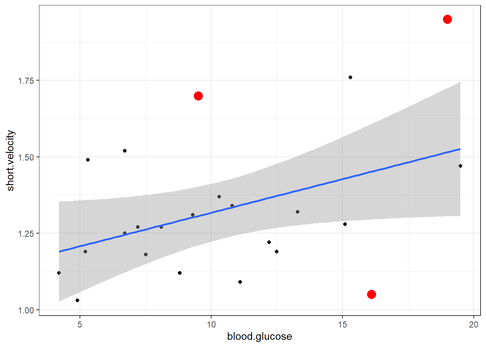
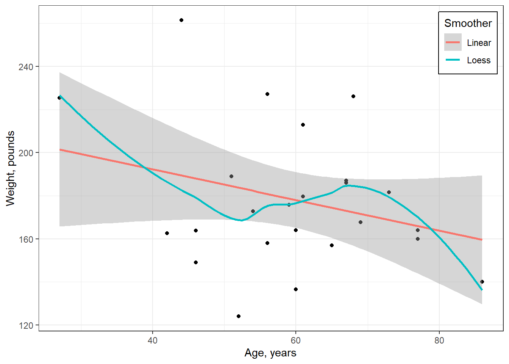

9 Ex: Ventricular Shortening Velocity
# install.packages("remotes")
# remotes::install_github("sarbearschwartz/apaSupp")
# remotes::install_github("ddsjoberg/gtsummary")
library(magrittr)
library(tidyverse)
library(broom)
library(naniar)
library(corrplot)
library(GGally)
library(gtsummary)
library(apaSupp)
library(performance)
library(interactions)
library(effects)
library(emmeans)
library(car)
library(ggResidpanel)
library(modelsummary)
library(ppcor)
library(jtools)
library(olsrr)
library(DescTools)
library(effectsize)
library(ggpubr)
library(ISwR) # Introduction to Statistics with R (datasets)9.1 PURPOSE
9.1.1 Research Question
Is there a relationship between fasting blood glucose and shortening of ventricular velocity among type 1 diabetic patiences? If so, what is the nature of the association?
9.1.2 Data Description
This dataset is included in the ISwR package (Dalgaard 2024), which was a companion to the texbook “Introductory Statistics with R, 2nd ed.” (Dalgaard 2008), although it was first published by Altman (1991) in Table 11.6.
The
thuesendata frame has 24 rows and 2 columns. It contains ventricular shortening velocity and blood glucose for type 1 diabetic patients.
blood.glucosea numeric vector, fasting blood glucose (mmol/l).short.velocitya numeric vector, mean circumferential shortening velocity (%/s).
Rows: 24
Columns: 2
$ blood.glucose <dbl> 15.3, 10.8, 8.1, 19.5, 7.2, 5.3, 9.3, 11.1, 7.5, 12.2, …
$ short.velocity <dbl> 1.76, 1.34, 1.27, 1.47, 1.27, 1.49, 1.31, 1.09, 1.18, 1…9.2 EXPLORATORY DATA ANALYSIS
Before embarking on any inferencial anlaysis or modeling, always get familiar with your variables one at a time (univariate), as well as pairwise (bivariate).
9.2.1 Univariate Statistics
Summary Statistics for all three variables of interest
Center: mean and median Spread: standard deviation, range (max - min), interquartile range (Q3 - Q1)
thuesen %>%
dplyr::select("Fasting Blood Glucose" = blood.glucose,
"Circumferential Shortening Velocity" = short.velocity) %>%
apaSupp::tab_desc(caption = "Description of Diabetic Participants")Measure | NA | M | SD | min | Q1 | Mdn | Q3 | max |
|---|---|---|---|---|---|---|---|---|
Fasting Blood Glucose | 0 | 10.30 | 4.34 | 4.20 | 7.08 | 9.40 | 12.70 | 19.50 |
Circumferential Shortening Velocity | 1 | 1.33 | 0.23 | 1.03 | 1.18 | 1.27 | 1.42 | 1.95 |
Note. NA = not available or missing. Mdn = median. Q1 = 25th percentile, Q3 = 75th percentile. N = 24. | ||||||||

9.2.3 Bivariate Statistics
(Unadjusted Pearson’s correlation)
The cor() fucntion in base \(R\) doesn’t like NA or missing values
blood.glucose short.velocity
blood.glucose 1 NA
short.velocity NA 1You may specify how to handle cases that are missing on at least one of the variables of interest:
-
use = “everything”NAs will propagate conceptually, i.e., a resulting value will beNAwhenever one of its contributing observations isNA<– DEFAULT -
use = “all.obs”the presence of missing observations will produce an error -
use = “complete.obs”missing values are handled by casewise deletion (and if there are no complete cases, that gives an error). -
use = “na.or.complete”is the same as above unless there are no complete cases, that givesNA -
use = “pairwise.complete.obs”the correlation between each pair of variables is computed using all complete pairs of observations on those variables. This can result in covariance matrices which are not positive semi-definite, as well asNAentries if there are no complete pairs for that pair of variables.
Commonly, we want listwise deletion:
blood.glucose short.velocity
blood.glucose 1.0000000 0.4167546
short.velocity 0.4167546 1.0000000It is also handy to specify the number of decimal places desired, but adding a rounding step:
blood.glucose short.velocity
blood.glucose 1.00 0.42
short.velocity 0.42 1.00If you desire a correlation single value of a single PAIR of variables, instead of a matrix, then you must use a magrittr exposition pipe (%$%)
thuesen %$% # notice the special kind of pipe
cor(blood.glucose, short.velocity, # specify exactly TWO variables
use = "complete.obs")[1] 0.4167546In addition to the cor() funciton, the base \(R\) stats package also includes the cor.test() function to test if the correlation is zero (\(H_0: R = 0\))
This TESTS if the cor == 0
thuesen %$% # notice the special kind of pipe
cor.test(blood.glucose, short.velocity, # specify exactly TWO variables
use="complete.obs")
Pearson's product-moment correlation
data: blood.glucose and short.velocity
t = 2.101, df = 21, p-value = 0.0479
alternative hypothesis: true correlation is not equal to 0
95 percent confidence interval:
0.005496682 0.707429479
sample estimates:
cor
0.4167546 The default correltaion type for cor()is Pearson’s \(R\), which assesses linear relationships. Spearman’s correlation assesses monotonic relationships.
thuesen %$% # notice the special kind of pipe
cor(blood.glucose, short.velocity, # specify exactly TWO variables
use = 'complete',
method = 'spearman') # spearman's (rho) [1] 0.3180029.2.4 Bivariate Visualization
ggplot(thuesen,
aes(x = blood.glucose, # x-axis variable
y = short.velocity)) + # y-axis variable
geom_point() + # place a point for each observation
geom_smooth(method = "lm",
formula = y ~ x) +
ggpubr::stat_regline_equation(label.x = 5,
label.y = 1.85,
size = 6) +
theme_bw() +
labs(x = "Blood Glucose, mmol/l",
y = "Mean Circumferential Shortening Velocity, %/s")
9.3 REGRESSION ANALYSIS
short.velocitydependent variable or outcome (\(Y\))blood.glucoseindependent variable or predictor (\(X\))
9.3.1 Fit A Simple Linear Model
\[ Y = \beta_0 + \beta_1 \times X \]
The lm() function must be supplied with at least two
options:
-
a formula:
Y ~ X -
a dataset:
data = XXXXXXX
When a model is fit and directly saved as a named object via the
assignment opperator (<-), no output is produced.
Running the name of the fit object yields very little output:
Call:
lm(formula = short.velocity ~ blood.glucose, data = thuesen)
Coefficients:
(Intercept) blood.glucose
1.09781 0.02196 Appling the summary() function produced a good deal more output:
Call:
lm(formula = short.velocity ~ blood.glucose, data = thuesen)
Residuals:
Min 1Q Median 3Q Max
-0.40141 -0.14760 -0.02202 0.03001 0.43490
Coefficients:
Estimate Std. Error t value Pr(>|t|)
(Intercept) 1.09781 0.11748 9.345 6.26e-09 ***
blood.glucose 0.02196 0.01045 2.101 0.0479 *
---
Signif. codes: 0 '***' 0.001 '**' 0.01 '*' 0.05 '.' 0.1 ' ' 1
Residual standard error: 0.2167 on 21 degrees of freedom
(1 observation deleted due to missingness)
Multiple R-squared: 0.1737, Adjusted R-squared: 0.1343
F-statistic: 4.414 on 1 and 21 DF, p-value: 0.0479You may request specific pieces of the output:
- Coefficients or beta estimates:
(Intercept) blood.glucose
1.09781488 0.02196252 - 95% confidence intervals for the coefficients or beta estimates:
2.5 % 97.5 %
(Intercept) 0.8534993816 1.34213037
blood.glucose 0.0002231077 0.04370194- The F-test for overall modle fit vs. a \(null\) or empty model having only an intercept and no predictors.
# A tibble: 2 × 5
Df `Sum Sq` `Mean Sq` `F value` `Pr(>F)`
<int> <dbl> <dbl> <dbl> <dbl>
1 1 0.207 0.207 4.41 0.0479
2 21 0.986 0.0470 NA NA - Various other model fit indicies:
'log Lik.' 3.583612 (df=3)[1] -1.167223[1] 2.2392599.3.2 Checking Assumptions via Residual Diagnostics
Before reporting a model, ALWAYS make sure to check the residules to ensure that the model assumptions are not violated.


OK: Simulated residuals appear as uniformly distributed (p = 0.259).
Viewing potentially influential or outlier points based on plots above:
# A tibble: 3 × 3
blood.glucose short.velocity id
<dbl> <dbl> <int>
1 19 1.95 13
2 16.1 1.05 20
3 9.5 1.7 24Here is a fancy way to visulaize ‘potential problem cases’ with ggplot2:
thuesen %>%
dplyr::filter(complete.cases(.)) %>% # keep only complete cases
ggplot() + # name the FULL dataset
aes(x = blood.glucose, # x-axis variable name
y = short.velocity) + # y-axis variable name
geom_point() + # do a scatterplot
stat_smooth(method = "lm") + # smooth: linear model
theme_bw() + # black-and-while theme
geom_point(data = thuesen %>% # override the dataset from above
filter(row_number() == c(13, 20, 24)), # with a reduced subset of cases
size = 4, # make the points bigger in size
color = "red") # give the points a different color
9.3.3 Visualize Relationships
When a model only contains main effects, a plot is not important for interpretation, but can help understand the relationship between multiple predictors.
The Effect() function from the effects
package chooses ‘5 or 6 nice values’ for your continuous independent
variable (\(X\)) based on the range of
values found in the dataset on which the model was fit and plugs them
into the regression equation \(Y = \beta_0 +
\beta_1 \times X\) to compute the predicted mean value
of the outcome (\(Y\)) (Fox et al. 2022).
effects::Effect(focal.predictors = c("blood.glucose"), # IV variable name
mod = fit_vel_glu) # fitted model name
blood.glucose effect
blood.glucose
4.2 8 12 16 20
1.190057 1.273515 1.361365 1.449215 1.537065 You may override the ‘nice values’ using the xlevels = list(var_name = c(#, #, ...#) option.
effects::Effect(focal.predictors = c("blood.glucose"),
mod = fit_vel_glu,
xlevels = list(blood.glucose = c(5, 10, 15, 20)))
blood.glucose effect
blood.glucose
5 10 15 20
1.207627 1.317440 1.427253 1.537065 Adding a piped data frame step (%>% data.frame()) will arrange the predicted \(Y\) values into a column called fit. This tidy data format is ready for plotting.
# A tibble: 5 × 5
blood.glucose fit se lower upper
<dbl> <dbl> <dbl> <dbl> <dbl>
1 4.2 1.19 0.0788 1.03 1.35
2 8 1.27 0.0516 1.17 1.38
3 12 1.36 0.0483 1.26 1.46
4 16 1.45 0.0742 1.29 1.60
5 20 1.54 0.110 1.31 1.77effects::Effect(focal.predictors = c("blood.glucose"),
mod = fit_vel_glu,
xlevels = list(blood.glucose = c(5, 12, 20))) %>%
data.frame() %>%
ggplot() +
aes(x = blood.glucose, # x-axis variable
y = fit) + # y-axis variable
geom_ribbon(aes(ymin = lower, # bottom edge of the ribbon
ymax = upper), # top edge of the ribbon
alpha = .5) + # ribbon transparency level
geom_line() +
theme_bw()
Notice that although the regression line is smooth, the ribbon is choppy. This is because we are basing it on only THREE values of \(X\).
[1] 5 12 20Use the seq() function in base \(R\) to request many values of \(X\)
[1] 5 10 15 20[1] 5 7 9 11 13 15 17 19 [1] 5 6 7 8 9 10 11 12 13 14 15 16 17 18 19 20 [1] 5.0 5.5 6.0 6.5 7.0 7.5 8.0 8.5 9.0 9.5 10.0 10.5 11.0 11.5 12.0
[16] 12.5 13.0 13.5 14.0 14.5 15.0 15.5 16.0 16.5 17.0 17.5 18.0 18.5 19.0 19.5
[31] 20.0effects::Effect(focal.predictors = c("blood.glucose"),
mod = fit_vel_glu,
xlevels = list(blood.glucose = seq(from = 5, to = 20, by = .5))) %>%
data.frame() %>%
ggplot() +
aes(x = blood.glucose, # x-axis variable
y = fit) + # y-axis variable
geom_ribbon(aes(ymin = lower, # bottom edge of the ribbon
ymax = upper), # top edge of the ribbon
alpha = .5) + # ribbon transparency level
geom_line() +
theme_bw()
Now that we are basing our ribbon on MANY more points of \(X\), the ribbon is much smoother.
For publication, you would of course want to clean up the plot a bit more:
effects::Effect(focal.predictors = c("blood.glucose"),
mod = fit_vel_glu,
xlevels = list(blood.glucose = seq(from = 5, to = 20, by = .5))) %>%
data.frame() %>%
ggplot() +
aes(x = blood.glucose, # x-axis variable
y = fit) + # y-axis variable
geom_ribbon(aes(ymin = lower, # bottom edge of the ribbon
ymax = upper), # top edge of the ribbon
alpha = .3) + # ribbon transparency level
geom_line() +
theme_bw()
The above plot has a ribbon that represents a 95% confidence interval (lower toupper) for the MEAN (fit) outcome. Sometimes we would rather display a ribbon for only the MEAN (fit) plus-or-minus ONE STANDARD ERROR (se) for the mean. You would do that by changing the variables that define the min and max edges of the ribbon (notice the range of the y-axis has changed):
effects::Effect(focal.predictors = c("blood.glucose"),
mod = fit_vel_glu,
xlevels = list(blood.glucose = seq(from = 5, to = 20, by = .5))) %>%
data.frame() %>%
ggplot() +
aes(x = blood.glucose,
y = fit) +
geom_ribbon(aes(ymin = fit - se, # bottom edge of the ribbon
ymax = fit + se), # top edge of the ribbon
alpha = .3) +
geom_line() +
theme_bw() 
Of course, you could do both ribbons together:
effects::Effect(focal.predictors = c("blood.glucose"),
mod = fit_vel_glu,
xlevels = list(blood.glucose = seq(from = 5, to = 20, by = .5))) %>%
data.frame() %>%
ggplot() +
aes(x = blood.glucose,
y = fit) +
geom_ribbon(aes(ymin = lower, # bottom edge of the ribbon = lower of the 95% CI
ymax = upper), # top edge of the ribbon = upper of the 95% CI
alpha = .3) +
geom_ribbon(aes(ymin = fit - se, # bottom edge of the ribbon = mean - SE
ymax = fit + se), # top edge of the ribbon = Mean + SE
alpha = .3) +
geom_line() +
theme_bw() 
9.4 CONCLUSION
9.4.1 Table
You may also present the output in a table using two different packages:
apaSupp::tab_lm(fit_vel_glu,
var_labels = c("blood.glucose" = "Blood Glucose"),
caption = "Parameter Estimates for Mean Circumferential Shortening Velocity Regressed on Fasting Blood Glucose",
general_note = "Units are perceont per second for mean circumferential shortening velocity and mmol per liter for fasting blood glucose.")Variable | b | (SE) | [95% CI] | p |
|---|---|---|---|---|
(Intercept) | 1.10 | (0.12) | [0.85, 1.34] | < .001 *** |
Blood Glucose | 0.02 | (0.01) | [0.00, 0.04] | .048 * |
R² | 0.17 | |||
Adjusted R² | 0.13 | |||
Note. Units are perceont per second for mean circumferential shortening velocity and mmol per liter for fasting blood glucose. | ||||
* p < .05. ** p < .01. *** p < .001. | ||||
9.4.2 Plot
effects::Effect(focal.predictors = c("blood.glucose"),
mod = fit_vel_glu,
xlevels = list(blood.glucose = seq(from = 5, to = 20, by = .5))) %>%
data.frame() %>%
ggplot() +
aes(x = blood.glucose,
y = fit) +
geom_ribbon(aes(ymin = fit - se, # bottom edge of the ribbon
ymax = fit + se), # top edge of the ribbon
alpha = .3) +
geom_line() +
theme_bw() +
labs(x = "Fasting Blood Glucose (mmol/l)",
y = "EStimated Marginal Mean\nMean Circumferential Shortening Velocity (%/s)") 
9.4.3 APA Write up
There is evidence
blood.glucoseis associated withshort.velocity.
In this sample of Type 1 Diabetic patient (n = 24), there is a moderate positive correlation between fasting blood glucose (M = 10.30 mmol/l, SD = 4.34) and shortening of ventricular velocity (M = 1.33 %/s, SD = 0.23), r = .417, p = .048. An increase of 1 mmol/l fasting blood glucose is associated with a .02 %/s increase in ventricular velocity shortening, b = 0.02, SE = 0.01, p = .048, \(R^2\) = .